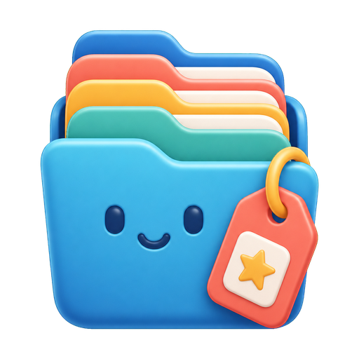

1
Guided choices
Every action is shown as a numbered option with plain-language hints, so nobody has to remember complicated commands.

A kinder way to organize filesTag files and folders from a beautiful guided terminal menu. No memorizing flags, no confusing popups, just clear choices that help people find things again.
Kids, parents, students, office teams, researchers, and careful archivists can all use the same simple flow.
Every action is shown as a numbered option with plain-language hints, so nobody has to remember complicated commands.
Add many tags, set one clear category, and browse your folders grouped by the labels that matter to you.
Categorax keeps small readable JSON files beside your content, which makes backup, sharing, and inspection straightforward.
On Windows, Categorax can install an Explorer menu. Select files and folders, open Categorax, and follow the friendly terminal.
Choose one item or a whole group of files and folders in Explorer.
Right-click and pick Categorax, or run it from any terminal.
Add tags, remove old ones, set a category, or browse everything by label.
Use the release for your platform, then install the Windows context menu if you want Explorer integration.
Download the Windows build, place it somewhere stable, then run the installer command.
Run Categorax from Terminal and organize any selected path with the same guided menu.
Use Categorax in your shell, scripts, or desktop launcher of choice.